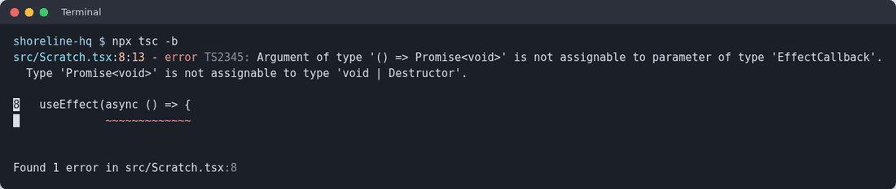
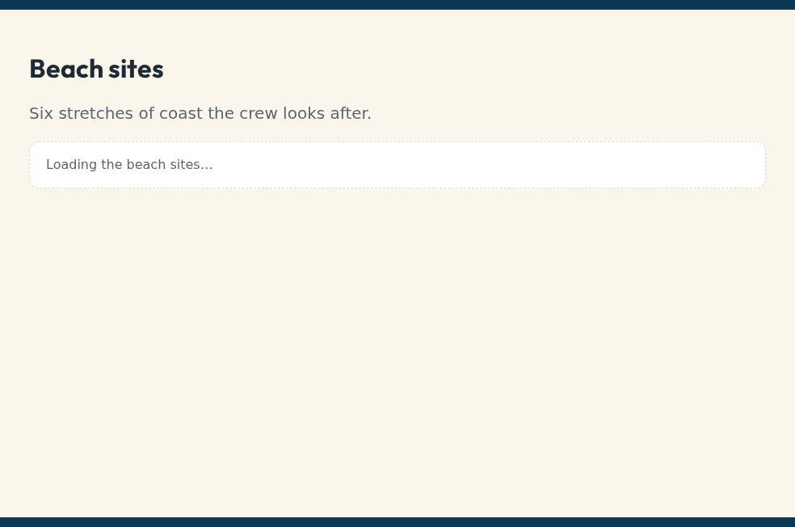
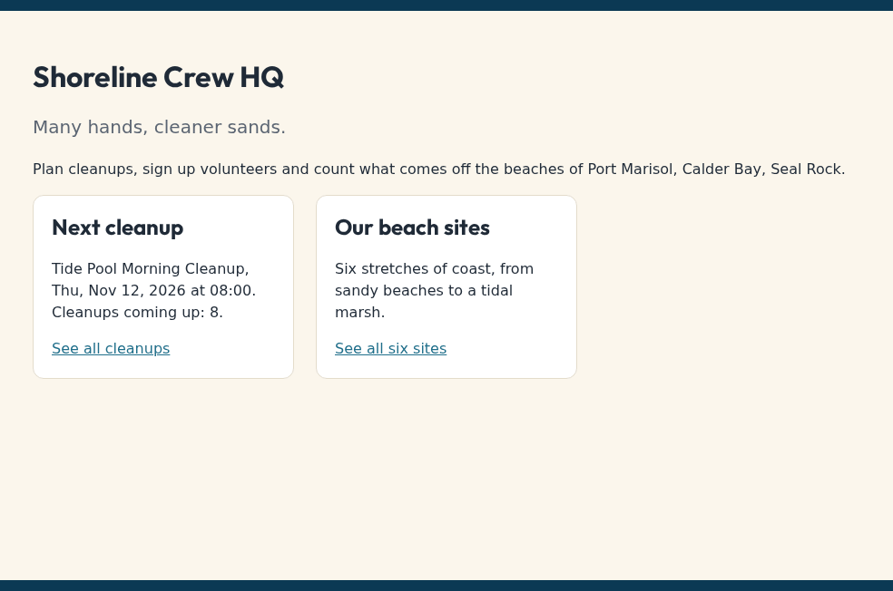

📡 Lesson 4.1: Effects and Fetching
Until today, Shoreline Crew HQ has shown a snapshot: sites and cleanups you pasted into two files. The real data lives in shoreline-api, and it changes: organizers add cleanups, volunteers fill spots. In this lesson the HQ starts asking the API for its data, every time a page opens. You will learn the one Hook that lets a component reach outside React, useEffect, and everything a real request needs: types for data that arrives later, a loading state, an error message people can act on, and a way to cancel a request nobody is waiting for any more. Module 4 begins with the app talking to its server for real.
🎯 Learning Objectives
By the end of this lesson, you will be able to:
- Explain what a side effect is, why it does not belong in rendering, and when you do not need an effect at all
- Write
useEffectwith the right dependency array and a cleanup function, and explain why Strict Mode runs effects twice in development - Fetch typed data in an effect, reading
Promise<T>,ResponseandAbortSignalin TypeScript's messages - Model loading, error and ready states with a generic discriminated union, and turn API errors into messages people understand
- Cancel requests with
AbortController, and practice slow and failing answers with the API's--latencyand?_statusswitches
📦 Code for this lesson
Starting code: lesson-13-start.zip · Finished code: lesson-13-end.zip. Each folder has a README with the commands to run it. Copy .env.example to .env.local in shoreline-hq before npm run dev.
In This Lesson
🌊 Side Effects and useEffect
Since Lesson 3.1 every component has been pure: given the same props and state, it returns the same elements and changes nothing else. The linter even warned you when new Date() crept into the footer's render. Purity is what lets React call your components whenever it likes, as often as it likes.
But an app has to touch the world outside React: ask a server for data, start a timer, set the browser tab's title, listen to the window. Anything like that is a side effect: something a function does besides returning its result. Side effects cannot happen during rendering, because rendering may run many times or be thrown away. React gives them their own place: useEffect, code that runs after React has put the component on the screen.
💡 Mental model: the radio check-in
A cleanup crew posts its plan on the board first: who is where, which beach. That is rendering, a description of what should be. Once the plan is up, the lead picks up the radio and checks in with the harbor office: that is the effect, talking to something outside the crew. And when the crew packs up, the lead radios "signing off", so the office stops expecting calls: that is the cleanup. Plan first, then the radio, and always sign off.
Here is a complete effect. Try it in shoreline-hq as src/Scratch.tsx (your experiment file for this lesson), showing it by temporarily making return <TideClock /> the first line of CurrentPage in App.tsx:
import { useEffect, useState } from 'react'
export function TideClock() {
const [now, setNow] = useState(() => new Date())
useEffect(() => {
// Start a timer when the clock appears on the screen...
const timer = setInterval(() => setNow(new Date()), 1000)
// ...and stop it when the clock goes away
return () => clearInterval(timer)
}, [])
return <p>Crew time: {now.toLocaleTimeString('en-US')}</p>
}The clock ticks every second. Read useEffect's two arguments:
- The effect function. React calls it after the component appears on the screen. It starts a timer, which is the outside world: the browser's timer keeps running whatever React does.
- What it returns: the cleanup function. React calls it when the component goes away (and before running the effect again). It stops the timer. Without it, every
TideClockthat ever appeared would keep a timer running forever. - The dependency array,
[]. The values the effect reads from the component. An empty array means "nothing from the component", so React runs the effect once, after the first render.
And the types: useEffect's first parameter has the type EffectCallback, a function that returns either nothing (void) or a cleanup function (React calls it a Destructor). That is all TypeScript allows an effect to return, which matters in a moment. The state needs no annotation: useState(() => new Date()) infers Date from the function, and passing a function means new Date() runs only once, for the first render, instead of on every render.
You might not need an effect
Effects are for synchronizing with something outside React. Before you write one, ask whether there is an outside system at all:
| You want to… | Use | In the HQ |
|---|---|---|
| Work out a value from props or state | A plain calculation during render (Lesson 3.4) | The filtered event lists and the "Showing 2 of 15" line |
| Respond to a click, a key, a submit | The event handler or the form action | "Clear filters", "Show details", the "Plan a cleanup" form |
| Keep something outside React in step with what is on the screen | useEffect | Loading the page's data from the API (today), a timer, the tab title (Exercise 2) |
Fetching the data a page shows is the classic effect: the server is outside React, and the request should follow the page being on the screen.
🔁 Dependencies and Strict Mode
When an effect runs
| Second argument | The effect runs… | Typical use |
|---|---|---|
[] | after the first render only | Load a page's data, start a timer |
[siteId] | after the first render, and after every render where siteId changed | Load the data for whatever is selected |
| nothing at all | after every render | Almost never what you want (Common Mistakes) |
React compares each dependency with its value from the last render, with Object.is (the same check useState uses). Before running the effect again, it runs the previous run's cleanup. The rule for what goes in the array is simple: every value from the component that the effect reads: props, state, and anything calculated from them. You do not choose dependencies; your code does. The linter checks it for you: its react-hooks(exhaustive-deps) rule is on in the Vite template's oxlint, and Common Mistakes shows what it says.
Why everything runs twice in development
Make src/Scratch.tsx log what happens:
import { useEffect } from 'react'
export function EffectLog() {
useEffect(() => {
console.log('effect: start')
return () => console.log('effect: clean up')
}, [])
return <p>Open the console.</p>
}Show <EffectLog /> the same way, open the browser's console (F12, or ⌘ Cmd+Option+J on a Mac) and reload:
Console (dev server)
effect: start
effect: clean up
effect: startStart, clean up, start. That is not a bug: it is the <StrictMode> wrapper in main.tsx (there since Lesson 1.2). In development only, React puts each component on the screen, takes it off, and puts it back, to prove that your cleanup really undoes your effect. An effect with a proper cleanup survives this without anyone noticing; one without (a timer that is never stopped, a request whose answer arrives twice) shows its bug at once, on your machine, instead of later for users. The production build (npm run build) runs each effect once. Do not remove <StrictMode> to make the double run go away; fix the cleanup.
📥 Fetching in an Effect
Since Lesson 2.4 the HQ has a typed client in src/api/client.ts, and getEvents() already ran once, in a temporary console.log in main.tsx. Now a component asks for data. The simplest version that works, in src/Scratch.tsx:
import { useEffect, useState } from 'react'
import { getSites } from './api/client.ts'
import type { Site } from './api/types.ts'
export function SiteNames() {
const [sites, setSites] = useState<Site[]>([])
useEffect(() => {
getSites().then((loaded) => setSites(loaded))
}, [])
return (
<ul>
{sites.map((site) => (
<li key={site.id}>{site.name}</li>
))}
</ul>
)
}Show it, and the six site names appear a moment after the empty list. Follow the types:
getSites()returnsPromise<Site[]>: a promise is an answer that is not here yet, and the type parameter says what it will hold when it is. Hover overgetSitesin VS Code to see it..then((loaded) => …)runs when the answer arrives, and TypeScript knowsloadedisSite[], theTfromPromise<T>. No annotation needed.useState<Site[]>([])is annotated because an empty array alone would benever[](Lesson 3.4).setSitesstarts a new render with the sites. The effect does not run again: its array is[].
Why not async straight away?
With await you would write useEffect(async () => { … }). TypeScript stops you:

Expected output (npx tsc -b)
src/Scratch.tsx:8:13 - error TS2345: Argument of type '() => Promise<void>' is not assignable to parameter of type 'EffectCallback'.
Type 'Promise<void>' is not assignable to type 'void | Destructor'.
8 useEffect(async () => {
~~~~~~~~~~~~~
Found 1 error in src/Scratch.tsx:8An async function always returns a promise, and an effect may only return nothing or a cleanup function, the void | Destructor you met above. React would wait for a cleanup function and get a promise. The linter adds Effect callbacks are synchronous to prevent race conditions. If you prefer await, put an async function inside the effect and call it:
import { useEffect, useState } from 'react'
import { getSites } from './api/client.ts'
import type { Site } from './api/types.ts'
export function SiteNames() {
const [sites, setSites] = useState<Site[]>([])
useEffect(() => {
async function load() {
setSites(await getSites())
}
load()
}, [])
return <p>{sites.length} sites</p>
}Both styles are fine. The project uses .then and .catch, which keeps each effect short.
What the first version gets wrong
It works on your machine, on a good day. Now imagine the beach: one bar of signal, the server restarting. The first version shows an empty page while waiting (is it loading, or are there no sites?), shows the same empty page forever if the request fails, and keeps going if the page is gone before the answer arrives. The next two sections fix each of these, and the project applies the fixes to every page.
One more thing to know about fetch itself: it rejects its promise only when no answer arrives (the server is down, the network is gone). An answer with an error status still resolves. Try it in the browser's console on the HQ's dev server page:
const response = await fetch('http://localhost:4000/api/events?_status=500')
response.ok
response.status
await response.json()response.ok is false, response.status is 500, and the body is the API's error object: {"error": "server_error", "message": "Simulated 500 response (the _status parameter)."}. Your code has to check ok, as client.ts has done since Lesson 2.4. (?_status=500 is one of shoreline-api's practice switches: it makes that one request fail on purpose.)
🚦 Loading, Error and Empty
A page that loads data is always in one of three situations: waiting, failed, or showing the data. You modeled exactly this in Lesson 2.2 as LoadState, a discriminated union on kind. The HQ gets a generic version, so one type works for sites, cleanups or anything else:
// What a screen that loads data can be doing (the LoadState of Lesson 2.2, for any kind of data)
export type LoadState<T> =
| { kind: 'loading' }
| { kind: 'failed'; message: string }
| { kind: 'ready'; data: T }LoadState<Site[]> has data: Site[] in its ready member. And only there: state.data is an error until you have checked state.kind === 'ready'. TypeScript makes "show the data before it has arrived" impossible to write. After if (state.kind !== 'ready') return …, TypeScript narrows state to the other two members, { kind: "loading"; } | { kind: "failed"; message: string; }, and below that line state.data is simply Site[].
- Loading is where every page starts:
useState<LoadState<Site[]>>({ kind: 'loading' }). Say what is loading ("Loading the beach sites…"), so a slow screen never looks like an empty one. - Failed holds a message for people. Say what could not be done and what to try; keep the technical details for the console.
- Empty is not a fourth kind: it is
readywith zero items. YourEventListhas handled that since Lesson 3.3 ("No drafts waiting to be published.").
Errors you can tell apart
Two very different things can go wrong. Either the API answered with an error status (a 500, a 404), or no answer arrived at all. The project's client throws its own error class for the first case:
/** The API answered, but with an error status (404, 500, ...) */
export class ApiError extends Error {
readonly status: number
readonly code: ErrorCode
readonly fieldErrors: Record<string, string[]> | undefined
constructor(status: number, body: ApiErrorBody) {
super(body.message)
this.name = 'ApiError'
this.status = status
this.code = body.error
this.fieldErrors = body.fieldErrors
}A class is a type and a value, so error instanceof ApiError narrows an unknown error to ApiError, with status and code typed (code is the API's ErrorCode union, copied in src/api/types.ts). The fields are written out instead of using constructor shortcuts, because the template's erasableSyntaxOnly setting forbids TypeScript-only syntax that changes the JavaScript output. And when no answer arrives, the browser's fetch rejects with a TypeError. Two errors, two messages:
| What happened | What the HQ shows | What the console shows |
|---|---|---|
| The API answered 500 | Could not load the beach sites. The server had a problem (500). Try again in a moment. | ApiError: Simulated 500 response (the _status parameter). |
| shoreline-api is not running | Could not load the beach sites. Could not reach the server. Check that shoreline-api is running, then try again. | TypeError: Failed to fetch |
Note the type of the error in .catch((error: unknown) => …). Without the annotation, a promise's rejection value is any, and error.no.such.thing compiles. Writing unknown makes you check before you use it, exactly what describeError does.
Numbers in the headers
Lists from shoreline-api come one page at a time, ten items unless you ask for more (perPage, up to 50). The body is only the items; how many there are in all travels in response headers, X-Total-Count and X-Total-Pages. The project's readPage reads both into the Page<T> shape you wrote in Lesson 2.3: { items: T[]; page: PageInfo }. A page on another origin (localhost:5173 asking localhost:4000) can only read a header the server lists in Access-Control-Expose-Headers; shoreline-api lists these, so response.headers.get('X-Total-Count') returns "15" for the events. Without that header, it would return null although the browser received the value.
✋ Canceling Requests
A request takes time, and the world moves on while it is out. The page may be gone before the answer arrives, or, for an effect with dependencies, the dependency may have changed: picture a list that loads the cleanups for the selected site. Select Pelican Point, then quickly Long Strand. Two requests are out. If Pelican Point's answer happens to arrive last, it overwrites Long Strand's, and the screen shows the wrong site's cleanups under the right heading. This is a race condition, and it is why the linter said effects should stay synchronous.
The fix is the cleanup function. The browser has a built-in way to cancel a fetch: an AbortController. Create one in the effect, give its signal (typed AbortSignal) to fetch, and abort it in the cleanup:
// After the first render: ask the API for the sites, and cancel the request if the page goes away
useEffect(() => {
const controller = new AbortController()
getSites(controller.signal)
.then((sites) => setState({ kind: 'ready', data: sites }))
.catch((error: unknown) => {
if (controller.signal.aborted) return
console.error(error)
setState({ kind: 'failed', message: describeError(error) })
})
return () => controller.abort()
}, [])controller.abort()cancels the request if it is still out. The browser stops waiting, and the promise rejects with anAbortError.- The
catchcheckscontroller.signal.abortedfirst: a request we canceled is not a failure to show anyone, so it returns quietly. - An answer that already arrived is not a problem either: after the cleanup, nobody calls
setStatefor that run any more. The latest run always wins.
Strict Mode shows this working. In the browser's DevTools, open the Network tab, filter by Fetch/XHR, and reload /sites on the dev server: there are two requests for sites. The first was canceled by Strict Mode's cleanup, the second delivered the sites. Measured on this course's setup: on the dev server the first request ended with net::ERR_ABORTED and the second succeeded; after npm run build, npm run preview sent exactly one.
💡 Why this matters
Loading, error and canceled states are where real apps feel solid or flaky. Users notice a spinner that never ends, a blank page after an error, an old result flashing in. In code reviews and interviews, "what happens if the request is slow, fails, or comes back late?" is a standard question, and you can now answer it for every page you build.
⚠️ Common Mistakes
⚠️ A dependency the array forgets
This component shows how many cleanups a site has. The effect reads siteId, but the array is empty:
import { useEffect, useState } from 'react'
import { getEvents } from './api/client.ts'
interface SiteEventCountProps {
siteId: string
}
export function SiteEventCount({ siteId }: SiteEventCountProps) {
const [count, setCount] = useState<number | null>(null)
useEffect(() => {
getEvents(`siteId=${siteId}`).then((found) => setCount(found.page.total))
}, [])
return <p>Cleanups at this site: {count ?? '…'}</p>
}Expected output (npm run lint)
> shoreline-hq@0.0.0 lint
> oxlint
⚠ react-hooks(exhaustive-deps): React Hook useEffect has a missing dependency: 'siteId'
╭─[src/Scratch.tsx:13:6]
11 │ useEffect(() => {
12 │ getEvents(`siteId=${siteId}`).then((found) => setCount(found.page.total))
· ───┬──
· ╰── useEffect uses `siteId` here
13 │ }, [])
· ──
14 │
╰────
help: Either include it or remove the dependency array.
Found 1 warning and 0 errors.
Finished in 15ms on 31 files with 150 rules using 20 threads.TypeScript has no complaint. But when the parent passes a different siteId, the effect never runs again, and the count stays the first site's. Put siteId in the array ([siteId]), and take the warning seriously every time: the linter reads the effect more carefully than a tired human does.
⚠️ No dependency array at all
Leave out the second argument and the effect runs after every render:
import { useEffect, useState } from 'react'
import { getSites } from './api/client.ts'
import type { Site } from './api/types.ts'
export function SiteNames() {
const [sites, setSites] = useState<Site[]>([])
useEffect(() => {
getSites().then((loaded) => setSites(loaded))
})
return <p>{sites.length} sites</p>
}The effect fetches, the answer sets state, the new state renders, the render runs the effect, which fetches again… The page looks fine ("6 sites"), npx tsc -b and npm run lint both pass, and the Network tab fills up: on this course's machine, more than 700 requests in two seconds. Every effect gets an array, even if it is [].
⚠️ Setting state at the top of an effect
It is tempting to start an effect with setState({ kind: 'loading' }). The linter objects:
Expected output (npm run lint, trimmed)
⚠ react(set-state-in-effect): Calling setState synchronously within an effect can trigger cascading renders
╭─[src/pages/SitesPage.tsx:16:5]
14 │
15 │ useEffect(() => {
· ────┬────
· ╰── This is the containing effect
16 │ setState({ kind: 'loading' })
· ────┬───
· ╰── Avoid calling setState() directly within an effect
17 │ const controller = new AbortController()
╰────Setting state right away in an effect renders the component a second time for nothing. Start in the right state instead (useState({ kind: 'loading' })), and when a click should show "loading" again, set it in that click's handler. Exercise 1 does exactly that. Setting state later, in .then or .catch, is what effects are for, and the rule does not mind.
🛠️ Project: The HQ Talks to the API
At the end of this project, every page that shows data loads it from shoreline-api when it opens: the home page's next cleanup, the events page, the sites page and the site menu of "Plan a cleanup". Each one shows a loading message, an error message when something goes wrong, and cancels its request when it is no longer needed. src/data/, with the sites and cleanups you pasted in Lessons 3.2 and 3.3, is deleted, and TypeScript guides you to every file that still used it.
Start both servers (node server.ts in shoreline-api, npm run dev in shoreline-hq) and delete src/Scratch.tsx (and the line you added to CurrentPage) if you still have them.
Step 1: A client that knows about errors and pages (14 min)
Replace src/api/client.ts with this version. The checks from Lesson 2.4 are still there; what is new is marked by the comments and listed below:
// Shoreline Crew HQ's API client (Lessons 2.4 and 4.1).
// Data from the API is unknown until a check proves its shape.
import type {
ApiErrorBody,
CleanupEvent,
ErrorCode,
EventStatus,
PageInfo,
Site,
Terrain,
} from './types.ts'
// ---------------------------------------------------------------- checking data
/** An object (not null, not an array), so its properties can be read */
function isRecord(value: unknown): value is Record<string, unknown> {
return typeof value === 'object' && value !== null && !Array.isArray(value)
}
function isStringArray(value: unknown): value is string[] {
return Array.isArray(value) && value.every((item) => typeof item === 'string')
}
const eventStatuses: EventStatus[] = ['draft', 'scheduled', 'completed', 'cancelled']
export function isEventStatus(value: unknown): value is EventStatus {
return eventStatuses.some((status) => status === value)
}
// The CleanupEvent properties that hold text
const eventTextFields: (keyof CleanupEvent)[] = [
'id', 'title', 'siteId', 'date', 'startTime', 'endTime',
'meetingPoint', 'description', 'leadOrganizerId', 'createdAt', 'updatedAt',
]
export function isCleanupEvent(value: unknown): value is CleanupEvent {
return (
isRecord(value) &&
eventTextFields.every((key) => typeof value[key] === 'string') &&
isEventStatus(value.status) &&
typeof value.capacity === 'number' &&
typeof value.spotsTaken === 'number' &&
isStringArray(value.suppliesProvided)
)
}
const terrains: Terrain[] = ['sand', 'rocky', 'marsh', 'mixed']
const siteTextFields: (keyof Site)[] = ['id', 'name', 'town', 'parking', 'description']
export function isSite(value: unknown): value is Site {
return (
isRecord(value) &&
siteTextFields.every((key) => typeof value[key] === 'string') &&
terrains.some((terrain) => terrain === value.terrain) &&
typeof value.accessible === 'boolean' &&
typeof value.latitude === 'number' &&
typeof value.longitude === 'number' &&
isRecord(value.image) &&
typeof value.image.url === 'string' &&
typeof value.image.alt === 'string' &&
typeof value.image.width === 'number' &&
typeof value.image.height === 'number'
)
}
/** A check for one item becomes a check for a list of them */
function isListOf<T>(isT: (value: unknown) => value is T) {
return (value: unknown): value is T[] => Array.isArray(value) && value.every(isT)
}
function isApiErrorBody(value: unknown): value is ApiErrorBody {
return isRecord(value) && typeof value.error === 'string' && typeof value.message === 'string'
}
// ---------------------------------------------------------------- errors
/** The API answered, but with an error status (404, 500, ...) */
export class ApiError extends Error {
readonly status: number
readonly code: ErrorCode
readonly fieldErrors: Record<string, string[]> | undefined
constructor(status: number, body: ApiErrorBody) {
super(body.message)
this.name = 'ApiError'
this.status = status
this.code = body.error
this.fieldErrors = body.fieldErrors
}
}
/** What to tell people when a request failed */
export function describeError(error: unknown): string {
if (error instanceof ApiError) {
return `The server had a problem (${error.status}). Try again in a moment.`
}
if (error instanceof TypeError) {
return 'Could not reach the server. Check that shoreline-api is running, then try again.'
}
return 'Something unexpected went wrong. Try again in a moment.'
}
// ---------------------------------------------------------------- talking to the API
function apiBaseUrl(): string {
const url = import.meta.env.VITE_API_URL
if (url === undefined || url === '') {
throw new Error('VITE_API_URL is not set: copy .env.example to .env.local')
}
return url
}
/** GET a path under /api. Throws ApiError when the API answers with an error status. */
async function request(path: string, signal?: AbortSignal): Promise<Response> {
const response = await fetch(`${apiBaseUrl()}/api${path}`, { signal })
if (!response.ok) {
const body: unknown = await response.json().catch(() => null)
throw new ApiError(
response.status,
isApiErrorBody(body) ? body : { error: 'server_error', message: `HTTP ${response.status}` },
)
}
return response
}
/** GET a path under /api and return the JSON body, unchecked */
export async function apiFetch(path: string, signal?: AbortSignal): Promise<unknown> {
const response = await request(path, signal)
return response.json()
}
/** GET a path and check the JSON with a type predicate before anyone uses it */
export async function getJSON<T>(
path: string,
isT: (value: unknown) => value is T,
signal?: AbortSignal,
): Promise<T> {
const data = await apiFetch(path, signal)
if (!isT(data)) {
throw new Error(`Unexpected data from GET /api${path}`)
}
return data
}
/** One page of a list, and where it sits in the whole list */
export interface Page<T> {
items: T[]
page: PageInfo
}
/** GET a list: the items are in the body, the page numbers in the response headers */
export async function readPage<T>(
path: string,
isItem: (value: unknown) => value is T,
signal?: AbortSignal,
): Promise<Page<T>> {
const response = await request(path, signal)
const items: unknown = await response.json()
if (!isListOf(isItem)(items)) {
throw new Error(`Unexpected data from GET /api${path}`)
}
// page and perPage are what we asked for (or the API's defaults, 1 and 10)
const url = new URL(response.url)
return {
items,
page: {
page: Number(url.searchParams.get('page') ?? '1'),
perPage: Number(url.searchParams.get('perPage') ?? '10'),
total: Number(response.headers.get('X-Total-Count')),
totalPages: Number(response.headers.get('X-Total-Pages')),
},
}
}
export function getSites(signal?: AbortSignal): Promise<Site[]> {
return getJSON('/sites', isListOf(isSite), signal)
}
/** Cleanups; query is a search string such as 'status=scheduled&perPage=50' */
export function getEvents(query: string, signal?: AbortSignal): Promise<Page<CleanupEvent>> {
return readPage(`/events?${query}`, isCleanupEvent, signal)
}isSitechecks a site the wayisCleanupEventchecks an event, including the nestedimageobject (afterisRecord(value.image), TypeScript lets you read its properties).isListOfis a generic function that returns a type predicate: give it a check for oneTand you get a check forT[]. It replaces the separate list check of Lesson 2.4.ApiErroranddescribeErrorare the two error cases from the lesson. Therequestfunction reads the API's error body (or makes one up if the body is not the API's shape) and throws anApiError.- Every function takes an optional
signal?: AbortSignaland passes it down tofetch. Optional, so code that does not need canceling simply leaves it out. readPagereturns aPage<T>: the items from the body, the totals from the headers.response.urlis the address that was requested, so the page numbers are the ones you asked for.getEvents(query, signal)now takes a query string and returns a wholePage<CleanupEvent>;getSitesis new.
Save and run npx tsc -b. Changing what a function takes and returns is a change for everyone who calls it, and TypeScript finds the one caller left over from Lesson 2.4:
Expected output (npx tsc -b)
src/main.tsx:15:1 - error TS2554: Expected 1-2 arguments, but got 0.
15 getEvents()
~~~~~~~~~
src/api/client.ts:180:27 - An argument for 'query' was not provided.
180 export function getEvents(query: string, signal?: AbortSignal): Promise<Page<CleanupEvent>> {
~~~~~~~~~~~~~
src/main.tsx:17:34 - error TS2339: Property 'length' does not exist on type 'Page<CleanupEvent>'.
17 console.log(`Loaded ${events.length} cleanups. First: ${events[0]?.title ?? 'none'}`)
~~~~~~
src/main.tsx:17:61 - error TS7053: Element implicitly has an 'any' type because expression of type '0' can't be used to index type 'Page<CleanupEvent>'.
Property '0' does not exist on type 'Page<CleanupEvent>'.
17 console.log(`Loaded ${events.length} cleanups. First: ${events[0]?.title ?? 'none'}`)
~~~~~~~~~
Found 3 errors in the same file, starting at: src/main.tsx:15That is the temporary log in main.tsx. Its job is done: remove its import and the whole block. Change these lines:
import { App } from './App.tsx'
-import { getEvents } from './api/client.ts'
</StrictMode>,
)
-
-// Temporary (Lesson 2.4): prove the typed client works. Lesson 4.1 moves fetching into components.
-getEvents()
- .then((events) => {
- console.log(`Loaded ${events.length} cleanups. First: ${events[0]?.title ?? 'none'}`)
- })
- .catch((error: unknown) => {
- console.error(error)
- })npx tsc -b is quiet again.
Step 2: One component for loading and errors (6 min)
Four pages will need the same two messages, so they get a component. Create src/utils/loadState.ts with the LoadState<T> type from the lesson, then src/components/LoadStatus.module.css:
.loading,
.failed {
margin: 0 0 2rem;
padding: 1rem 1.25rem;
border-radius: 0.75rem;
background: var(--surface);
}
.loading {
border: 1px dashed var(--border);
color: var(--text-muted);
}
.failed {
border: 2px solid var(--error);
}and src/components/LoadStatus.tsx:
import type { LoadState } from '../utils/loadState.ts'
import styles from './LoadStatus.module.css'
interface LoadStatusProps {
state: LoadState<unknown>
/** What is loading, for the messages: "the beach sites" */
what: string
}
// The message to show while data is on its way, or when it could not be loaded
export function LoadStatus({ state, what }: LoadStatusProps) {
if (state.kind === 'loading') {
return (
<p role="status" className={styles.loading}>
Loading {what}…
</p>
)
}
if (state.kind === 'failed') {
return (
<p role="alert" className={styles.failed}>
Could not load {what}. {state.message}
</p>
)
}
return null
}state: LoadState<unknown>accepts the state of any page: aLoadState<Site[]>fits, becauseSite[]can go whereverunknownis expected. The component never readsdata, so it does not need to know its type.- The loading message is a
role="status"region, like the status lines of Module 3. The error isrole="alert": screen readers announce it right away, because it changes what the person can do. It says it in words, with a red border as a second signal, never color alone. - For a
readystate it renders nothing: the page shows its data instead.
Step 3: The sites page loads its sites (14 min)
Replace src/pages/SitesPage.tsx:
import { useEffect, useState } from 'react'
import { describeError, getSites } from '../api/client.ts'
import type { Site } from '../api/types.ts'
import { LoadStatus } from '../components/LoadStatus.tsx'
import { SiteCard } from '../components/SiteCard.tsx'
import type { LoadState } from '../utils/loadState.ts'
import styles from './Page.module.css'
export function SitesPage() {
const [state, setState] = useState<LoadState<Site[]>>({ kind: 'loading' })
// After the first render: ask the API for the sites, and cancel the request if the page goes away
useEffect(() => {
const controller = new AbortController()
getSites(controller.signal)
.then((sites) => setState({ kind: 'ready', data: sites }))
.catch((error: unknown) => {
if (controller.signal.aborted) return
console.error(error)
setState({ kind: 'failed', message: describeError(error) })
})
return () => controller.abort()
}, [])
return (
<>
<h1>Beach sites</h1>
<p className={styles.lead}>Six stretches of coast the crew looks after.</p>
{state.kind === 'ready' ? (
<div className={styles.grid}>
{state.data.map((site) => (
<SiteCard key={site.id} site={site} />
))}
</div>
) : (
<LoadStatus state={state} what="the beach sites" />
)}
</>
)
}Everything from the lesson in one place: the page starts as loading, the effect runs once ([]), the answer becomes ready or failed, a canceled request is ignored, and the cleanup cancels. The heading and the lead sentence show at once; only the part that needs data waits. console.error(error) keeps the details for you, the developer, in the console.
Open /sites: it looks exactly as before, because the API answers in a few milliseconds. Time to practice the other states. shoreline-api has switches for this; stop it (Ctrl+C) and start it slow:
node server.ts --latency=4000Every answer now takes four seconds. Reload /sites:

node server.ts --latency=4000 every answer takes four seconds, long enough to see the loading state.Next, a failing answer. For one request, add ?_status=500 to its path: in client.ts, temporarily change getJSON('/sites', …) to getJSON('/sites?_status=500', …). (Restart the API without --latency first if you are impatient.)

?_status=500 made the API fail on purpose. The page says what happened in words; the details went to the browser's console.The console has the details:
Console (dev server, first lines)
Failed to load resource: the server responded with a status of 500 (Internal Server Error)
ApiError: Simulated 500 response (the _status parameter).Put the path back to '/sites'. Last, the server is gone: stop shoreline-api and reload. The page says: Could not load the beach sites. Could not reach the server. Check that shoreline-api is running, then try again. The console:
Console (dev server, first lines)
Failed to load resource: net::ERR_CONNECTION_REFUSED
TypeError: Failed to fetchStart shoreline-api again (node server.ts). Other switches for later: --fail-rate=0.2 makes about one request in five fail, and ?_delay=2000 slows one request. You will see this page's two requests in the Network tab as described in the lesson: the first canceled by Strict Mode, the second answered.
Step 4: The events page loads cleanups and sites together (14 min)
Each event card shows its site's name, and until now it found the site in data/sites.ts. From now on the card is given its site. In src/components/EventCard.tsx, change these lines:
import { useState } from 'react'
-import type { CleanupEvent } from '../api/types.ts'
-import { sites } from '../data/sites.ts'
+import type { CleanupEvent, Site } from '../api/types.ts'
import { getAvailability } from '../utils/availability.ts' interface EventCardProps {
event: CleanupEvent
+ /** undefined when the event's site is not in the list */
+ site: Site | undefined
}
-export function EventCard({ event }: EventCardProps) {
+export function EventCard({ event, site }: EventCardProps) {
const [showDetails, setShowDetails] = useState(false)
- const site = sites.find((s) => s.id === event.siteId)The rest of the card already reads site, so nothing else changes. The prop is required but may be undefined: a caller must decide, and the "Site to be confirmed" text still covers a missing site. Run npx tsc -b and TypeScript tells you who must pass it:
Expected output (npx tsc -b)
src/components/EventList.tsx:19:12 - error TS2741: Property 'site' is missing in type '{ event: CleanupEvent; }' but required in type 'EventCardProps'.
19 <EventCard event={event} />
~~~~~~~~~
src/components/EventCard.tsx:14:3 - 'site' is declared here.
14 site: Site | undefined
~~~~
Found 1 error in src/components/EventList.tsx:19EventList gets the sites as a prop and finds each card's site. Replace src/components/EventList.tsx:
import type { CleanupEvent, Site } from '../api/types.ts'
import { EventCard } from './EventCard.tsx'
import styles from './EventList.module.css'
interface EventListProps {
events: CleanupEvent[]
sites: Site[]
emptyMessage: string
}
export function EventList({ events, sites, emptyMessage }: EventListProps) {
if (events.length === 0) {
return <p className={styles.empty}>{emptyMessage}</p>
}
return (
<ul className={styles.list}>
{events.map((event) => (
<li key={event.id}>
<EventCard event={event} site={sites.find((site) => site.id === event.siteId)} />
</li>
))}
</ul>
)
}Now the page. It needs two lists from the API, and it should show either both or an error. Promise.all starts both requests at once and waits for both; if either fails, the whole thing fails. Replace src/pages/EventsPage.tsx:
import { useEffect, useState } from 'react'
import { describeError, getEvents, getSites } from '../api/client.ts'
import type { CleanupEvent, Site } from '../api/types.ts'
import { EventFilters, type StatusFilter } from '../components/EventFilters.tsx'
import { EventList } from '../components/EventList.tsx'
import { LoadStatus } from '../components/LoadStatus.tsx'
import type { LoadState } from '../utils/loadState.ts'
import styles from './Page.module.css'
// Everything this page needs from the API, loaded together
interface EventsData {
events: CleanupEvent[]
sites: Site[]
}
function matchesFilters(event: CleanupEvent, search: string, status: StatusFilter): boolean {
const statusMatches = status === 'all' || event.status === status
const text = `${event.title} ${event.description}`.toLowerCase()
return statusMatches && text.includes(search)
}
export function EventsPage() {
const [query, setQuery] = useState('')
const [status, setStatus] = useState<StatusFilter>('all')
const [state, setState] = useState<LoadState<EventsData>>({ kind: 'loading' })
// Two requests at once; the page is ready when both have answered
useEffect(() => {
const controller = new AbortController()
Promise.all([getEvents('perPage=50', controller.signal), getSites(controller.signal)])
.then(([eventsPage, sites]) => {
setState({ kind: 'ready', data: { events: eventsPage.items, sites } })
})
.catch((error: unknown) => {
if (controller.signal.aborted) return
console.error(error)
setState({ kind: 'failed', message: describeError(error) })
})
return () => controller.abort()
}, [])
if (state.kind !== 'ready') {
return (
<>
<h1>Cleanup events</h1>
<LoadStatus state={state} what="the cleanups" />
</>
)
}
// Derived values: worked out from state on every render, never stored
const { events, sites } = state.data
const search = query.trim().toLowerCase()
const visible = events.filter((event) => matchesFilters(event, search, status))
const upcoming = visible.filter((event) => event.status === 'scheduled')
const drafts = visible.filter((event) => event.status === 'draft')
const past = visible
.filter((event) => event.status === 'completed' || event.status === 'cancelled')
.toReversed()
const filtering = search !== '' || status !== 'all'
const noMatches = 'No cleanups here match your filters.'
function clearFilters() {
setQuery('')
setStatus('all')
}
return (
<>
<h1>Cleanup events</h1>
<p>
<a href="/events/new">Plan a cleanup</a>
</p>
<EventFilters
query={query}
status={status}
onQueryChange={setQuery}
onStatusChange={setStatus}
onClear={clearFilters}
/>
<p className={styles.lead} role="status">
Showing {visible.length} of {events.length}: {upcoming.length} coming up,{' '}
{past.length} in the log.
</p>
<h2>Coming up</h2>
<EventList
events={upcoming}
sites={sites}
emptyMessage={filtering ? noMatches : 'Nothing scheduled yet.'}
/>
<h2>Drafts</h2>
<EventList
events={drafts}
sites={sites}
emptyMessage={filtering ? noMatches : 'No drafts waiting to be published.'}
/>
<h2>Past cleanups</h2>
<EventList
events={past}
sites={sites}
emptyMessage={filtering ? noMatches : 'No cleanups in the log yet.'}
/>
</>
)
}EventsDatanames what the page needs. TypeScript types thePromise.allasPromise<[Page<CleanupEvent>, Site[]]>, a tuple: an array with a known type at each position, so([eventsPage, sites])destructures with the right type for each.- One
AbortControllercancels both requests: they share the signal. perPage=50asks for all fifteen public cleanups at once, because the filters from Lesson 3.4 still work on the whole list in the browser. (Lesson 6.2 moves the filters into the address; the API can filter too.)- The early return comes after all three Hooks. The Rules of Hooks from Lesson 3.4 still hold: Hooks first, in the same order on every render, then any
return. - Below the early return,
state.dataisEventsData, and everything you wrote in Lesson 3.4 runs unchanged on the loaded events.
Open /events: the same fifteen cleanups, now from the API. Try the filters; they work exactly as before.
Step 5: The home page's next cleanup (7 min)
The home page needs only one cleanup: the first scheduled one from today on. The API can find it (status=scheduled&when=upcoming&perPage=1), and the X-Total-Count header says how many there are in all. Replace src/pages/HomePage.tsx:
import { useEffect, useState } from 'react'
import { describeError, getEvents, type Page } from '../api/client.ts'
import type { CleanupEvent } from '../api/types.ts'
import { Card } from '../components/Card.tsx'
import { LoadStatus } from '../components/LoadStatus.tsx'
import { formatDate } from '../utils/format.ts'
import type { LoadState } from '../utils/loadState.ts'
import styles from './Page.module.css'
const crewName = 'Shoreline Crew'
const tagline = 'Many hands, cleaner sands.'
const towns = ['Port Marisol', 'Calder Bay', 'Seal Rock']
interface NextCleanupProps {
upcoming: Page<CleanupEvent>
}
// The first upcoming cleanup, and how many there are in all (from the X-Total-Count header)
function NextCleanup({ upcoming }: NextCleanupProps) {
const next = upcoming.items[0]
if (next === undefined) {
return <p>Nothing scheduled yet.</p>
}
return (
<p>
{next.title}, <time dateTime={next.date}>{formatDate(next.date)}</time> at{' '}
{next.startTime}. Cleanups coming up: {upcoming.page.total}.
</p>
)
}
export function HomePage() {
const [state, setState] = useState<LoadState<Page<CleanupEvent>>>({ kind: 'loading' })
// One cleanup is enough: the first scheduled one from today on
useEffect(() => {
const controller = new AbortController()
getEvents('status=scheduled&when=upcoming&perPage=1', controller.signal)
.then((upcoming) => setState({ kind: 'ready', data: upcoming }))
.catch((error: unknown) => {
if (controller.signal.aborted) return
console.error(error)
setState({ kind: 'failed', message: describeError(error) })
})
return () => controller.abort()
}, [])
return (
<>
<h1>{crewName} HQ</h1>
<p className={styles.lead}>{tagline}</p>
<p>
Plan cleanups, sign up volunteers and count what comes off the beaches of{' '}
{towns.join(', ')}.
</p>
<div className={styles.grid}>
<Card title="Next cleanup">
{state.kind === 'ready' ? (
<NextCleanup upcoming={state.data} />
) : (
<LoadStatus state={state} what="the next cleanup" />
)}
<a href="/events">See all cleanups</a>
</Card>
<Card title="Our beach sites">
<p>Six stretches of coast, from sandy beaches to a tidal marsh.</p>
<a href="/sites">See all six sites</a>
</Card>
</div>
</>
)
}NextCleanup is a small component in the same file, not exported: it is only this page's business. upcoming.items[0] is CleanupEvent | undefined (the noUncheckedIndexedAccess setting from Lesson 2.4), so the undefined check is required, and it gives you the honest "Nothing scheduled yet." for an empty list. Only the card waits for the API; the heading and the sites card show at once.

X-Total-Count header.Step 6: Delete the pasted data (12 min)
Two files still import src/data/sites.ts, but you do not need to remember which. Delete the whole src/data folder and ask TypeScript:
Expected output (npx tsc -b)
src/components/NewEventForm.tsx:3:23 - error TS2307: Cannot find module '../data/sites.ts' or its corresponding type declarations.
3 import { sites } from '../data/sites.ts'
~~~~~~~~~~~~~~~~~~
src/components/NewEventForm.tsx:77:25 - error TS7006: Parameter 'site' implicitly has an 'any' type.
77 {sites.map((site) => (
~~~~
src/utils/eventForm.ts:4:23 - error TS2307: Cannot find module '../data/sites.ts' or its corresponding type declarations.
4 import { sites } from '../data/sites.ts'
~~~~~~~~~~~~~~~~~~
src/utils/eventForm.ts:64:20 - error TS7006: Parameter 'site' implicitly has an 'any' type.
64 if (!sites.some((site) => site.id === values.siteId)) {
~~~~
Found 4 errors in 2 files.
Errors Files
2 src/components/NewEventForm.tsx:3
2 src/utils/eventForm.ts:4Deleting something and letting the compiler list what depended on it is one of the most useful habits TypeScript gives you. Both files need the sites, so they will get them from the page. In src/utils/eventForm.ts, the check takes the sites as a parameter (like today, so it stays a pure function that is easy to test in Module 9). Change these lines:
-import type { DateString, NewEvent } from '../api/types.ts'
-import { sites } from '../data/sites.ts'
+import type { DateString, NewEvent, Site } from '../api/types.ts' // The API's rules for a new cleanup, with messages that say how to fix the problem
-export function validateEvent(values: EventFormValues, today: DateString): FieldErrors {
+export function validateEvent(
+ values: EventFormValues,
+ today: DateString,
+ sites: Site[],
+): FieldErrors {In src/components/NewEventForm.tsx, the form receives the sites as a prop. The form's action needs them too, so it moves inside the component, where it can read the prop. Change these lines:
import { useActionState } from 'react'
-import type { NewEvent } from '../api/types.ts'
-import { sites } from '../data/sites.ts'
+import type { NewEvent, Site } from '../api/types.ts'
import { const initialState: FormState = { kind: 'editing', values: emptyValues, errors: {} }
-// The form's action: React calls it with the previous state and the submitted FormData
-function planCleanup(_previous: FormState, formData: FormData): FormState {
- const values = readValues(formData)
- const errors = validateEvent(values, toDateString(new Date()))
- if (Object.keys(errors).length > 0) {
- return { kind: 'editing', values, errors }
- }
- // The button that submitted the form sends its own name and value
- const status = formData.get('status') === 'scheduled' ? 'scheduled' : 'draft'
- return { kind: 'ready', event: toNewEvent(values, status) }
-}
-
-export function NewEventForm() {
+interface NewEventFormProps {
+ /** The beach sites to choose from (loaded from the API by the page) */
+ sites: Site[]
+}
+
+export function NewEventForm({ sites }: NewEventFormProps) {
+ // The form's action: React calls it with the previous state and the submitted FormData.
+ // It is inside the component because it checks the site against the sites prop.
+ function planCleanup(_previous: FormState, formData: FormData): FormState {
+ const values = readValues(formData)
+ const errors = validateEvent(values, toDateString(new Date()), sites)
+ if (Object.keys(errors).length > 0) {
+ return { kind: 'editing', values, errors }
+ }
+ // The button that submitted the form sends its own name and value
+ const status = formData.get('status') === 'scheduled' ? 'scheduled' : 'draft'
+ return { kind: 'ready', event: toNewEvent(values, status) }
+ }
+
const [state, formAction, isPending] = useActionState(planCleanup, initialState)The site menu's sites.map(…) further down now reads the prop, unchanged. The page loads the sites and renders the form only when they are ready. Replace src/pages/NewEventPage.tsx:
import { useEffect, useState } from 'react'
import { describeError, getSites } from '../api/client.ts'
import type { Site } from '../api/types.ts'
import { LoadStatus } from '../components/LoadStatus.tsx'
import { NewEventForm } from '../components/NewEventForm.tsx'
import type { LoadState } from '../utils/loadState.ts'
import styles from './Page.module.css'
export function NewEventPage() {
const [state, setState] = useState<LoadState<Site[]>>({ kind: 'loading' })
// The form needs the sites for its menu and its checks
useEffect(() => {
const controller = new AbortController()
getSites(controller.signal)
.then((sites) => setState({ kind: 'ready', data: sites }))
.catch((error: unknown) => {
if (controller.signal.aborted) return
console.error(error)
setState({ kind: 'failed', message: describeError(error) })
})
return () => controller.abort()
}, [])
return (
<>
<h1>Plan a cleanup</h1>
<p className={styles.lead}>
Fill in the basics. Save it as a draft to finish later, or publish it so volunteers can
sign up.
</p>
{state.kind === 'ready' ? (
<NewEventForm sites={state.data} />
) : (
<LoadStatus state={state} what="the beach sites" />
)}
</>
)
}Rendering the form only once the sites are there means the form never has to think about a missing site list. Check everything:
npx tsc -b
npm run lint
npm run buildExpected output (npm run lint)
> shoreline-hq@0.0.0 lint
> oxlint
Found 0 warnings and 0 errors.
Finished in 13ms on 30 files with 150 rules using 20 threads.Then click through every page, and submit "Plan a cleanup" once with mistakes and once filled in: the site menu lists the six sites from the API, and the messages work as in Lesson 3.5. The HQ now shows whatever shoreline-api says. Restart the API and the sample data is fresh again; change it (Module 7) and the HQ will show the change.
Notice how similar the four effects are: the same dozen lines, with a different request each time. Writing it four times was deliberate; in Lesson 4.2 you turn it into one Hook of your own.
Your own project: for your Lesson 11.1 app, list the data each screen needs from a server, and for each one write the three messages: what it says while loading, when it fails, and when the list is empty.
✅ Project Completion Checklist
- ☐
client.tshasApiError,describeError,readPage,getSitesandgetEvents(query, signal), and the temporary log inmain.tsxis gone - ☐
LoadStatusshows "Loading …" as a status and errors as an alert - ☐ The home, events, sites and "Plan a cleanup" pages load their data in an effect with an
AbortControllerand a cleanup - ☐ With
--latency=4000you saw the loading message; with?_status=500and a stopped API you saw the two error messages - ☐
src/data/is deleted and nothing imports it - ☐
npx tsc -b,npm run lintandnpm run buildpass, andsrc/Scratch.tsxis deleted
🏋️ Hands-on Exercises
Exercises 1 and 2 are part of the lesson (about 15 minutes together, included in the lesson time).
🏋️ Exercise 1: Try again
When the sites fail to load, the only way out is reloading the page. Add a Try again button under the error on the sites page that loads the sites again. Test it: stop shoreline-api, open /sites, start the API, press the button.
💡 Hint
An effect runs again when a dependency changes. Add a piece of state that exists only to change: a number of attempts. The button increases it. Should the button also show "Loading" again? Then set that in the click handler, not at the top of the effect (Common Mistakes says why).
✅ Solution
import { useEffect, useState } from 'react'
import { describeError, getSites } from '../api/client.ts'
import type { Site } from '../api/types.ts'
import buttonStyles from '../components/Button.module.css'
import { LoadStatus } from '../components/LoadStatus.tsx'
import { SiteCard } from '../components/SiteCard.tsx'
import type { LoadState } from '../utils/loadState.ts'
import styles from './Page.module.css'
export function SitesPage() {
const [state, setState] = useState<LoadState<Site[]>>({ kind: 'loading' })
// Counts the tries: a new number runs the effect again
const [attempt, setAttempt] = useState(0)
useEffect(() => {
const controller = new AbortController()
getSites(controller.signal)
.then((sites) => setState({ kind: 'ready', data: sites }))
.catch((error: unknown) => {
if (controller.signal.aborted) return
console.error(error)
setState({ kind: 'failed', message: describeError(error) })
})
return () => controller.abort()
}, [attempt])
function tryAgain() {
setState({ kind: 'loading' })
setAttempt((n) => n + 1)
}
return (
<>
<h1>Beach sites</h1>
<p className={styles.lead}>Six stretches of coast the crew looks after.</p>
{state.kind === 'ready' ? (
<div className={styles.grid}>
{state.data.map((site) => (
<SiteCard key={site.id} site={site} />
))}
</div>
) : (
<LoadStatus state={state} what="the beach sites" />
)}
{state.kind === 'failed' && (
<button type="button" className={buttonStyles.secondary} onClick={tryAgain}>
Try again
</button>
)}
</>
)
}attempt is never read inside the effect, but it is in the array, so a new number runs the effect again (and the previous run's cleanup first). tryAgain shows the loading message and bumps the number in the same click; React renders once for both. With the API started, one press brings back all six sites and the button disappears with the error. The course's own code continues without this change; Lesson 4.2's Hook gets a reload of its own.
🏋️ Exercise 2: The tab says where you are
Make the browser tab say Beach sites · Shoreline Crew HQ while the sites page is open, and give the old title back when the page goes away. document.title is outside React: an effect's job. Where in SitesPage does the new effect go, and what is its dependency array?
💡 Hint
Remember the title before you change it, and put it back in the cleanup. The title never depends on props or state here.
✅ Solution
Add it above the loading effect (any place before a return works, since Hooks must all run on every render):
// While this page is on the screen, the browser tab says so
useEffect(() => {
const previous = document.title
document.title = 'Beach sites · Shoreline Crew HQ'
return () => {
document.title = previous
}
}, [])The array is [], because the effect reads nothing from the component. On /sites the tab says Beach sites · Shoreline Crew HQ; on /events it is still Shoreline Crew HQ. Strict Mode's start, clean up, start does no harm, because the cleanup puts back exactly what the effect changed. Two effects in one component are normal: one per outside thing to keep in step. Lesson 4.2 turns this into a reusable useDocumentTitle Hook; the course's code does not keep it here.
🏋️ Exercise 3: "This is taking a while" (Stretch)
Optional stretch, not counted in the lesson time (about 15 minutes).
Some days the beach Wi-Fi is slow. Make LoadStatus add a sentence when loading takes more than three seconds: This is taking longer than usual. Is shoreline-api slow today? Test with node server.ts --latency=5000.
💡 Hint
A setTimeout is outside React, like the clock's setInterval. Start it in an effect only while the state is loading, clear it in the cleanup, and let it set a slow state. Which value from props does the effect read?
✅ Solution
import { useEffect, useState } from 'react'
import type { LoadState } from '../utils/loadState.ts'
import styles from './LoadStatus.module.css'
interface LoadStatusProps {
state: LoadState<unknown>
/** What is loading, for the messages: "the beach sites" */
what: string
}
// The message to show while data is on its way, or when it could not be loaded
export function LoadStatus({ state, what }: LoadStatusProps) {
const [slow, setSlow] = useState(false)
// Three seconds of loading: say so. A new kind (or leaving the page) stops the timer.
useEffect(() => {
if (state.kind !== 'loading') return
const timer = setTimeout(() => setSlow(true), 3000)
return () => clearTimeout(timer)
}, [state.kind])
if (state.kind === 'loading') {
return (
<p role="status" className={styles.loading}>
Loading {what}…{slow && ' This is taking longer than usual. Is shoreline-api slow today?'}
</p>
)
}
if (state.kind === 'failed') {
return (
<p role="alert" className={styles.failed}>
Could not load {what}. {state.message}
</p>
)
}
return null
}The effect reads state.kind, so that is its dependency (the linter agrees). When the data arrives, the kind changes, the cleanup clears the timer, and the message disappears with the loading state. With five seconds of latency, the status says Loading the beach sites… at first and Loading the beach sites… This is taking longer than usual. Is shoreline-api slow today? a few seconds later. The useState and useEffect calls come before the first if: Hooks first, then returns.
🎯 Quick Quiz
🎯 Check Your Understanding
Question 1: SitesPage calls useEffect(() => { … }, []). When does React run that effect in a production build?
Question 2: You write useEffect(async () => { setSites(await getSites()) }, []). What does npx tsc -b say?
Question 3: shoreline-api answers a request with status 500. What does the browser's fetch do?
Question 4: On the dev server, the Network tab shows two requests for /api/sites when /sites opens, and the first is canceled. Why?
Question 5: SiteEventCount fetches with siteId=${siteId} in an effect whose array is []. The parent switches it from Pelican Point to Long Strand. What does the page show?
❓ Common Questions at This Stage
Why not load the data in an event handler, or once at the top of a file?
An event handler runs when someone does something; the sites should load because the page is on the screen, with nobody clicking. A request at the top of a module runs once when the app starts, for every page whether it is shown or not, and never again (that was the temporary log in main.tsx). An effect ties the request to the component being there, and the cleanup ties canceling to it going away.
Do real teams write a fetch effect in every page?
Not for long. The pattern is worth knowing by heart, because every data library is built on it and you will debug it in older code. But teams usually wrap it: in a custom Hook (Lesson 4.2), in Suspense with React's use (Lesson 4.4), in a router's loaders (Lesson 6.3), or in a data library such as TanStack Query (Lesson 7.1), which adds caching, retries and refetching. React's own documentation recommends a framework or library for data fetching in larger apps. Each of those lessons replaces some of today's code, and each makes more sense because you wrote it by hand first.
Is the double run in Strict Mode slowing my app down?
Only in development, on purpose, and only for effects and some rendering checks. npm run build leaves <StrictMode> in the code, but its checks do nothing in a production build: this lesson's measurement saw one request in the preview. If a double run breaks something, the effect's cleanup is missing or incomplete, and that bug would have hit users in other ways.
Why is getEvents' query a plain string?
It keeps today's client small, and the HQ only has two queries. A typo in a query string is not caught by TypeScript, but shoreline-api checks the values: status=finished gets a 400 answer whose fieldErrors say "status must be one of: draft, scheduled, completed, cancelled.", and LoadStatus would show the error. When the filters move into the address bar in Lesson 6.2, the queries get more structure.
🌟 Going Further: Bonus Challenge
Give each site card on /sites a line "Cleanups here: N". Write a small SiteEventCount component (like the one in Common Mistakes, but with its dependency array right and an AbortController) that asks for siteId=…&perPage=1 and shows page.total. That is six requests when the page opens: watch them in the Network tab. Then add &_delay= with a random number of milliseconds to each request and watch the counts arrive in a different order every time, each still under the right card.
📓 Learning Journal
Take five to ten minutes and jot down:
- Key concepts you learned today
- Techniques that clicked (and the ones that have not, yet)
- Questions or confusion to look up or bring to the next session
- Ideas to try on your own
- Progress and feelings: how did this lesson go for you?
✍️ This lesson's prompt: Explain to a teammate, step by step, what happens from the moment someone opens /sites until the six cards appear: which render shows what, when the effect runs, where the types come from, and what the cleanup is for. Then describe what you saw with --latency, ?_status=500 and a stopped API, and which of the three messages you would most like to improve.
📝 Lesson Summary
🎓 Key Takeaways
- Rendering stays pure;
useEffectruns code that talks to the outside world after React has updated the screen, and its cleanup undoes it - The dependency array lists every value from the component that the effect reads:
[]for once,[siteId]to follow a value, never nothing; the linter'sexhaustive-depsrule checks it - Strict Mode runs effects start, clean up, start in development only, to prove your cleanup works
- An effect function cannot be
async(TS2345); use.then/.catchor an async function inside it, and annotate the error asunknown LoadState<T>makes loading, failed and ready explicit, and TypeScript only lets you readdataonce it isready; "empty" is ready with no itemsfetchrejects only when no answer arrives; checkok, turn error answers into anApiError, and show people words, not stack traces- An
AbortControlleraborted in the cleanup cancels requests nobody is waiting for and prevents old answers from overwriting new ones
| If you want to… | Go to |
|---|---|
| Look up React patterns quickly | React Cheat Sheet |
| Check the API's endpoints, switches and errors | The shoreline-api reference |
| Fix "Failed to fetch" and friends | Troubleshooting: Failed to fetch |
| Read React's reference for effects | React: useEffect |
| Decide whether you need an effect | React: You Might Not Need an Effect |
| Read about canceling requests | MDN: AbortController |
🏆 What You've Accomplished
- You wrote your first effects, with dependency arrays and cleanups, and watched Strict Mode test them
- You gave the API client typed errors and typed pages, with totals read from response headers
- You built loading and error messages for every page, and practiced them with a slow, a failing and a stopped API
- You made every request cancelable, so old answers can never overwrite new ones
- You deleted the pasted data and let TypeScript lead you to every file that used it: Shoreline Crew HQ now shows what the API says
🔭 Looking Ahead
You wrote the same loading effect four times today. In Lesson 4.2: Custom Hooks you pull it out into a Hook of your own, useApi, generic over the data it loads, plus two small Hooks for the search box and the tab title. You will type what a Hook returns and see why a Hook is just a function with rules.
📋 Before the Next Lesson
- Make sure
npx tsc -b,npm run lintandnpm run buildpass,src/Scratch.tsxis gone, andclient.tsasks for'/sites'again (not?_status=500) - Restart shoreline-api without switches (
node server.ts) - Keep your own app's list of screens and their loading, error and empty messages for Lesson 11.1
🌱 Encouragement for the Journey
Today the app stopped pretending. Data that arrives later, sometimes slowly, sometimes not at all, is one of the hardest parts of front-end work, and you handled all of it: loading, failing, canceling, and the double run that catches mistakes. If the effect pattern still feels like a lot of lines, that is the right feeling: next lesson you will be glad to wrap it up. And when you saw the red error box after ?_status=500, that was not something going wrong; it was your app doing exactly what you built it to do when the world goes wrong. That is what makes software trustworthy.